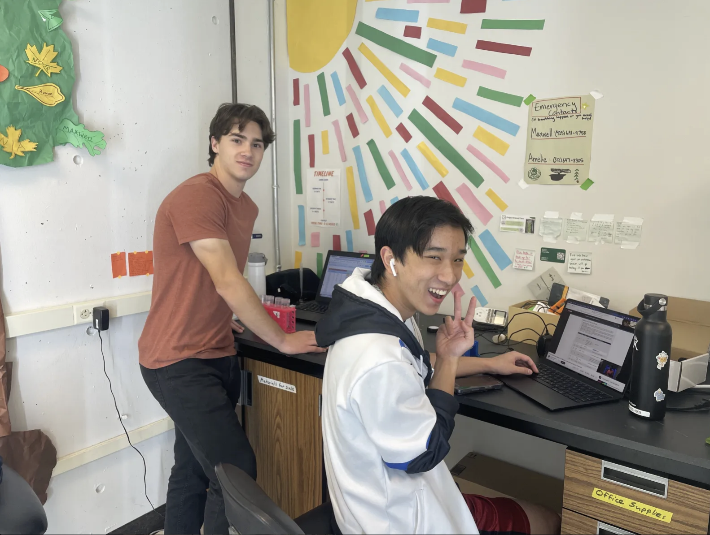
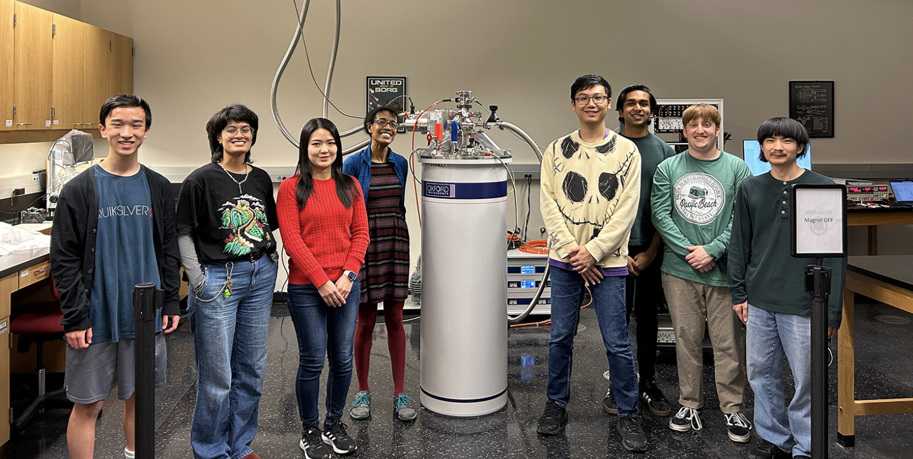
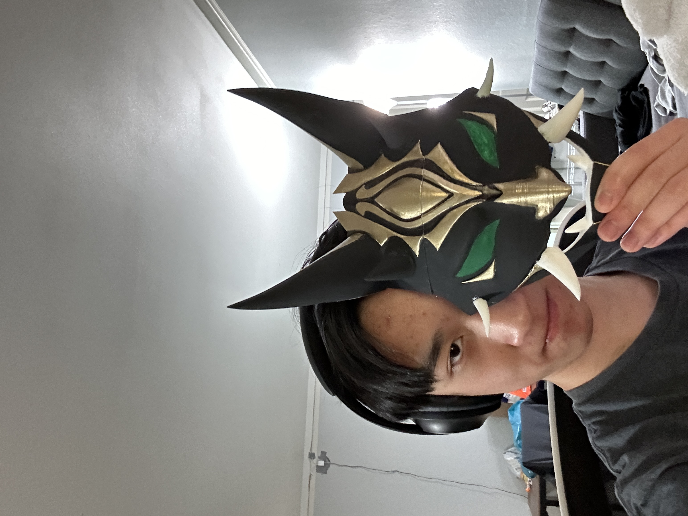
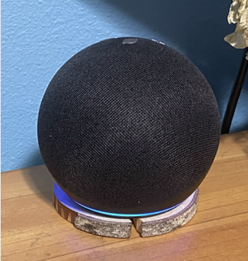
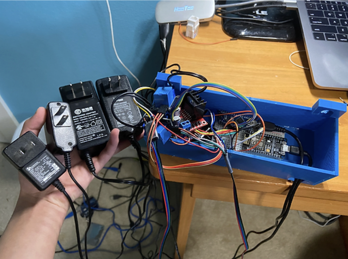

My name is Alexander Vuu, I'm 18 years old, and was born in Seattle Washington. I'm currently
pursuing a Bachlor of Science in Electrical and Computer Engineering (ECE) at the University of Washington.
I love trying new things, especially new technology. My interest have varied from game design to
robot creation, with everything in between!
What is my role at ProjectIF? I'm the architect of Project Indoor Farm's (IF) website. Project IF is a University of Washington Hydroponics club.
As the lead of the automation team, I manage a team of 5 automation members, future automation projects, and prototype budgeting.
The Building Process
During my freshman year, I took on a solo project of building a website for ProjectIF, with zero website experience, I chose to build a website from scratch, and host it using a Raspberry Pi. When stuck with a problem, I used online resources, this endeavor taught me Bash, Python, and HTML while learning how to leverage open-source software, like the Nginx web server, employing various Python libraries, setting up a Node.js server. My next year at the University of Washington I was promoted to the head of the automation team, our goal is to make a fully autonomous watering system by detecting when the watering solution's pH and EC is too high or too low and adjusting it accordingly.
Specs
Our farm run off of a 2014 Mac Mini. We use Nginx as our webserver, and a Raspberry Pi to record and send back sensor and image data
Required Skills
Python
Bash/Linux
Nginx
MQTT
HTML, Css, Javascript
Node.js
GitHub Utilization
3D Printing


Research Assistant at the University of Washington
Research in Superconductors and Vortices
January 2024 - Present
The goal of our research is to find superconducting materials with low critical tempurature.
Our experiments consist of type 2 superconductors since they have a higher critical temperature
than type 1 superconductors. Currently we are experimeting with different varieties of
YBa2Cu3O7.
Required skills
Collect and analyze data
Work well in a fast-paced work setting
Cooperate well in a group enviorment
Prepare other articles, reports, and presentations
Request or acquire equipment or supplies necessary for the project
Prepare, maintain, and update website materials
3D-Printing Experiences
Primordial Jade Winged Spear July 2023 - August 2023
Ever since playing Genshin Impact I've always wanted a to-scale weapon of my favorite spear in the game. I used my 3D printing knowledge
electrical engineering experiance, and experimented with spray paints to model, wire, and paint the final product. In total its a staggering
6ft tall, with functioning LED lights.
Maker's Fair and Etsy Shop
November 2023 - December 2023
During college I have less time to commit to large scale 3D-printing projects. But when school work is too stressful I 3D model in my free
time. I became a vendor at our schools Maker's Fair, a one day event, where I sold 3D-printed Genshin Impact keychains and Pokemon. In total
I made over $400! Riding the success of my previous vendor experaince I started and Etsy shop where I made and sold Wireless Lotad Phone Chargers.
Required Skills
Blender (3D-modeling software)
3D-Printing
Soldering
Basic Electrical Egineering Experaince
Strong Social Skills
Past 3D-Printing Projects



Arduino with Alexa Integration
Voice Controlled Curtains June 2020 - July 2020
Built a system that would open and close curtains automatically.
The first iteration was using a phone via Bluetooth to control
the curtains. The second iteration was using Alexa voice control
to open and close the curtains. The current iteration is based on
the time zones using sunset and sunrise to open and close the curtains
automatically
Required Skills
Java/C++
Esp8266 WiFi Module
HC-05 Bluetooth Module
Stepper Motors
Soldering
3D Printing
Linux
Computing Libraries
GitHub Utilization
Biking the Seattle to Portland
I've loved biking ever since middle school. In 2019 I decided to challenge myself
and complete the Seattle to Portland one day ride! I would go on 60-mile rides with my dad
every other week in preparations, and when the final day came, I rode 209 miles in 14 hours!